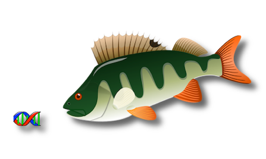

Polymorphism
Evaluation,
Ranking and
Classification for
Heritable traits (version 1.1)


PERCH is a software suite for the interpretation of rare or common genetic variants. It can by used to prioritize genes for disease gene discovery research or classify variants for clinical genetic testing.
Features:
-
•Broad integration -- This framework has a broad
integration of heterogeneous information, including
deleteriousness, allele frequency, quality of variant
calls from next-generation sequencing (NGS),
co-segregation of rare alleles with the disease within
pedigrees, association of rare alleles with the disease
among case-control samples, structural variations,
de novo mutations in trios, the biological relevance
of a gene to the disease of interest, gene expression
profile, and previous study results. -
•Quantitative -- Most components are quantitatively
integrated without transforming a continuous value into a categorical score, or filtering variants by a threshold. This increases the power of the analysis and decreases the level of arbitrariness. -
•Multi-purpose -- This framework can perform gene prioritization and gene set analysis to select candidate genes for subsequence studies. It can also perform variant prioritization for the fine mapping of known loci detected by GWAS, linkage, or sequencing studies. It can conduct quantitative variant classification following the IARC guidelines, which can also be integrated with the ACMG guidelines in a semi-quantitative fashion.
-
•Flexible usage -- Components of this framework can be assembled in various ways to accommodate different study designs or analysis aims. It is also easy to replace a component with another software, such as SEQlinkage for co-segregation analysis.
-
•Test statistics -- You can choose one of the several statistics for rare variant association test, including linear or logistic regression, sum squared U, Fisher’s exact test, and Wilcoxon rank sum.
-
•Customized analysis -- You can provide your R script to do analysis.
-
•Whole genome -- It works for whole genome sequencing, as well as whole exome sequencing or targeted sequencing data.
-
•Structural variations -- It jointly consider small variants (single nucleotide variants and small insertion/deletion) and structural variations (copy number, deletions, insertions, inversions).
-
•Accurate deleteriousness score -- The deleteriousness score is a combination of individual predictors and is accurate. It works for coding and non-coding regions, and for SNVs and InDels.
-
•Customizable allele frequency usage -- The deleteriousness score incorporates allele frequencies annotated by users, so it can take into account the nature of the studied disease, the genetic background of the studied population, and potentially new data. Users can also request that the deleteriousness score do not taken into consideration any allele frequency data.
-
•Liability classes and covariates -- The segregation analysis can include liability classes. The rare-variant association analysis can include covariates.
-
•Variant weights -- Variants are weighted by deleteriousness and call quality.
-
•Individual weights -- Individuals are weighted to control for familial correlation.
-
•Complex diseases -- It was designed for complex disease research targeting rare or low-frequency variants conferring a high or medium risk. It is powerful for complex traits as well as Mendelian and undiagnosed diseases.
-
•Quantitative quality control -- Removing bad variant calls is the most commonly employed quality control (QC) procedure, but it is normally conservative to keep as many causal variants as possible, and the variants at the boundary of a filtering threshold is relatively not clean. Therefore, after removing obvious artifacts by routine QC procedures, call quality should still be quantitatively engaged in analyses. In this framework, variant call quality is quantitatively considered and balanced with deleteriousness and biological relevance.
-
•Privacy -- You can download programs and analyze your data locally. No information will be collected, stored, or sent out from your computer.
If you don’t see a menu bar (HOME MANUAL etc.)
at the top of this page, please turn on JavaScript.